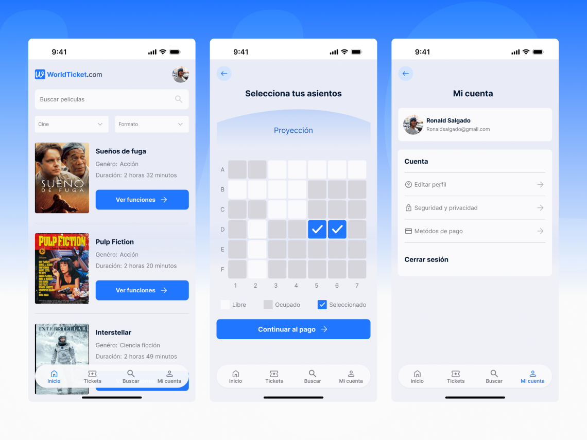
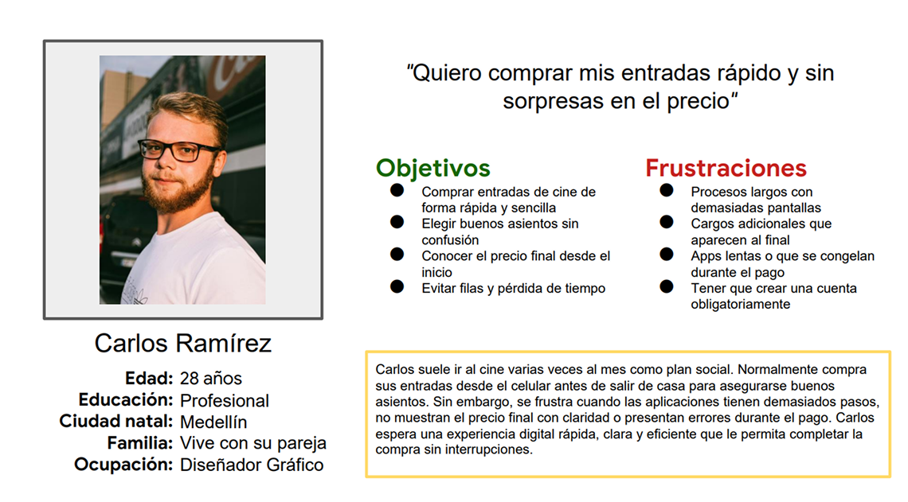
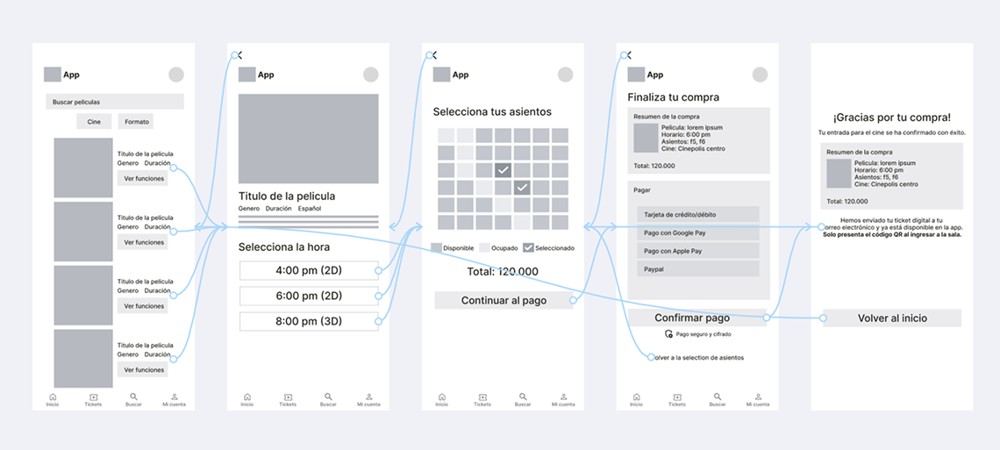
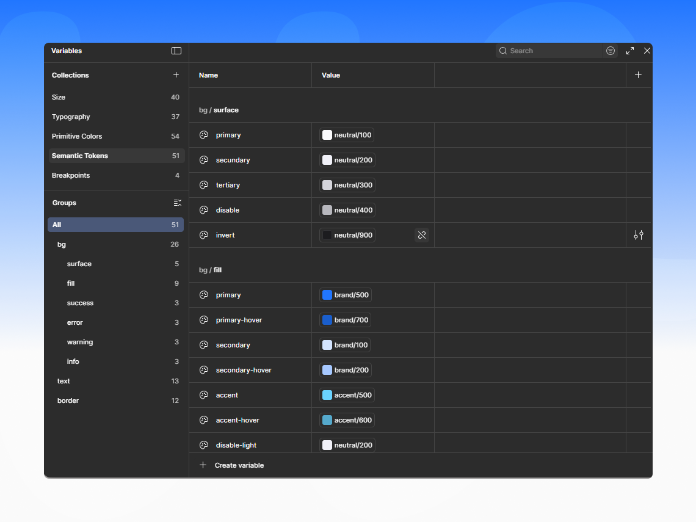
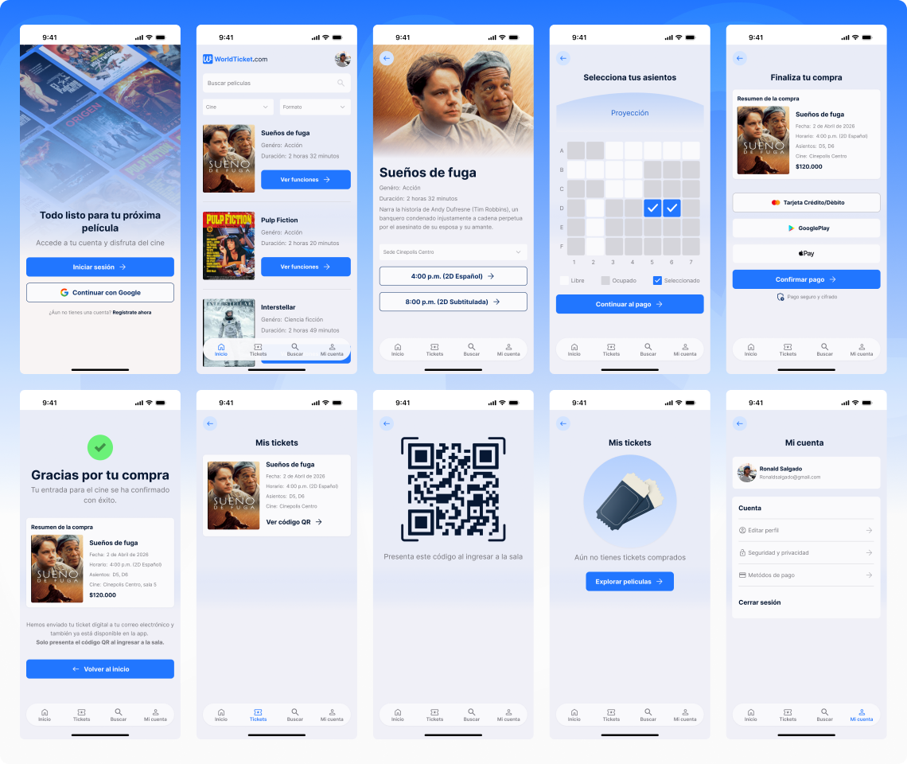

Diseño de la app WorldTicket para compra de entradas de cine

Acerca del proyecto
WorldTicket es un proyecto conceptual desarrollado como parte del Certificado Profesional de Google en UX Design. El objetivo fue diseñar una aplicación móvil que facilite la compra de entradas de cine mediante una experiencia clara, rápida y centrada en el usuario.
Mi rol y responsabilidades
En este proyecto me desempeñé como UX/UI Designer, encargándome de: Investigación de usuarios, definición del problema, diseño del flujo de usuario, creación de arquitectura de la información y prototipos, creación del sistema de diseño y pruebas de usabilidad e iteraciones de diseño.
Objetivo del diseño
Diseñar una aplicación móvil que permita comprar entradas de cine de forma simple, clara y confiable, reduciendo la fricción durante el flujo principal y mejorando la experiencia de pago.

Paso 1: Investigación de usuarios
El proceso comenzó con entrevistas a usuarios, que permitieron identificar comportamientos, motivaciones y puntos de fricción al comprar entradas de cine en entornos digitales. A partir de estos hallazgos se creó un user persona, con el objetivo de mantener al usuario real como referencia durante todo el diseño.

Paso 2: Creación de user journey
Posteriormente, se desarrolló un user journey para visualizar el recorrido completo del usuario, identificar momentos de fricción y oportunidades de mejora antes de diseñar soluciones.

Paso 3: Arquitectura de la información
A partir de la investigación inicial, se creo un sitemap, un userflow y wireframes de baja fidelidad, estos wireframes se evaluaron mediante pruebas de usabilidad no moderadas por videollamada. Los resultados mostraron que los usuarios entendían fácilmente cómo iniciar la compra, pero presentaban fricción en la selección de asientos y el proceso de pago, además de necesitar mayor claridad antes y después de confirmar la compra. Con base en estos hallazgos, los wireframes se iteraron simplificando pasos, incorporando un resumen de compra previo al pago y reforzando la confirmación final. Estas mejoras fueron validadas en una segunda ronda de pruebas, confirmando un flujo más claro y confiable.

Paso 4: Sistema de diseño
Se creo un sistema de diseño escalable para garantizar consistencia visual, claridad y accesibilidad en toda la aplicación. El sistema fue construido utilizando design tokens, lo que permitió centralizar colores, tipografía, espaciados y estilos de componentes, facilitando un handoff más eficiente con desarrollo y futuras iteraciones del producto. Este enfoque asegura coherencia en la experiencia y permite que el diseño crezca de manera ordenada.

Paso 5: Diseño UI y prototipo de alta fidelidad
Con base en los wireframes iterados y el sistema de diseño, se diseño un prototipo de alta fidelidad enfocado en el flujo principal de compra de entradas. El prototipo prioriza la claridad visual, la reducción de fricción en el proceso de pago y una confirmación final clara para reforzar la confianza del usuario. Este prototipo fue utilizado para validar la experiencia completa de principio a fin.
Resultados y aprendizajes
El proceso de investigación y validación permitió identificar puntos críticos del flujo y mejorar la experiencia de compra de forma iterativa. Las pruebas confirmaron que pequeños ajustes en la jerarquía de la información y en el feedback visual tienen un impacto directo en la confianza del usuario. Este proyecto reforzó la importancia de diseñar con datos reales y validar constantemente las decisiones de diseño.